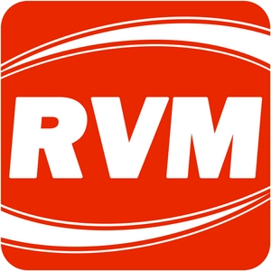
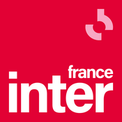
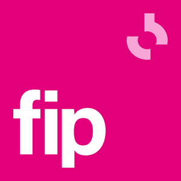

Il n'y a rien de tel que d'entendre tes paroles interprétées par des acteurs professionnels ou de voir la scène que tu a écrite, par un mercredi pluvieux, jouée devant la caméra pour la première fois.
A Zeno.FM Station
ICI ET MAINTENANT 95.2
J'ARRÊTE QUAND JE VEUT !
NRJ
Paris, Pop, Hit-parade, Hits
La radio des plus grands tubes !Paris, Pop, Hit-parade, Hits
Chez-nous, la musique restera gratuite !
NRJ en direct : Hit Music Only.
RVM Ardennes
Ardennes, Chanson Française, Hits
RVM, Le meilleur les hits + des grands standards des années 70 à aujourd'hui.Ardennes, Chanson Française, Hits
La radio des plus grands tubes !
Chez-nous, la musique restera gratuite !
France Info
Paris
La radio franceinfo diffuse l’actualité, en temps réel, 24/7. “France Info, deux points, ouvrez l’info”
Paris
France Inter
Paris, Débats
Information, débat d'idées, divertissement, culture... aucun programme ne manque à l'appel. France Inter offre également une programmation musicale ambitieuse.
Paris, Débats
RMC
Info Talk Sport, Paris
RMC Info - toute l'actualité et l'information sportive en direct ! Radio Monte Carlo est une radio de Talk généraliste d'origine monégasque.
Info Talk Sport, Paris
fip
Paris, Jazz, Musique du Monde, Film et Comédie musicale
Fip c’est une programmation éclectique entrecoupée d'informations routières et culturelles et d'un bulletin d'informations toutes les heures et sans aucune pub
Paris, Jazz, Musique du Monde, Film et Comédie musicale